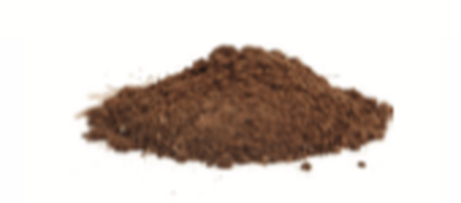
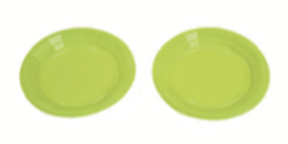
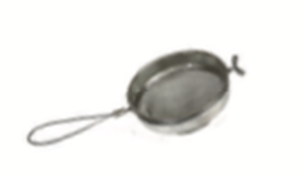
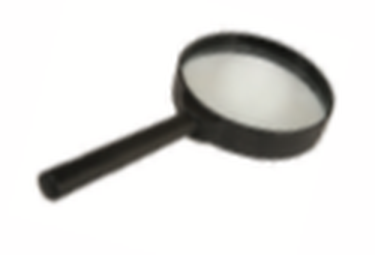
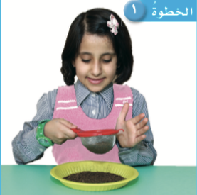

تُرْبَة
العلوم · الصف الثاني
رحلة إلى العالم المخفي تحت أقدامنا
مرحبًا بكن عالماتي الصغيرات
اليوم: ............ التاريخ: ..../..../١٤٤٨هـ
أ/ شامه البقمي
أنظر وأتساءل · صفحة ١٤٦
مَاذَا نَجِدُ أَيْضًا فِي التُّرْبَةِ؟
فكّري… ثم شاركي زميلاتك
أ/ شامه البقمي
١
أستكشف · نشاط استقصائي · صفحة ١٤٧
أ/ شامه البقمي
أَحْتَاجُ إِلَى:

تُرْبَة

طَبَقَيْنِ

مِصْفَاة

عَدَسَة مُكَبِّرَة
أ/ شامه البقمي
الخطوة ١
ثُمَّ أَهُزُّهَا بِرِفْقٍ فَوْقَ طَبَقٍ.

من كتابي – صفحة ١٤٧
أ/ شامه البقمي
الخطوة ٢ · أُلَاحِظُ
وَأَرْسُمُ مَا أَرَاهُ.
ماذا رأيتِ؟ حصى صغيرة، وبقايا أوراق، وجذور دقيقة
أ/ شامه البقمي
الخطوة ٣: أَضَعُ مَا تَبَقَّى فِي الْمِصْفَاةِ عَلَى طَبَقٍ آخَرَ، ثُمَّ أُلَاحِظُ.
قطع أكبر: حصى وبقايا أوراق
حبيبات تربة ناعمة
أَسْتَكْشِفُ أَكْثَرَ: أُكَرِّرُ النَّشَاطَ مُسْتَخْدِمًا تُرْبَةً مُخْتَلِفَةً.
أ/ شامه البقمي